Leadbox
User Guide for Team Members
Accepting Your Invitation
As a Team Member, you do not register on your own — your Company Admin sends you an invitation by email. When you receive this email, follow the steps below to set up your Leadbox account.
Step 1 — Open the Invitation Email
Check your inbox for an invitation email from Leadbox. Click the Accept Invitation link inside the email. This link takes you directly to the registration page with your details pre-filled.

The invitation link sent to your email — click it to begin registration.
Step 2 — Complete Your Registration
The registration page will open. Your email address is already filled in. You just need to set your name, username, phone number, and password.
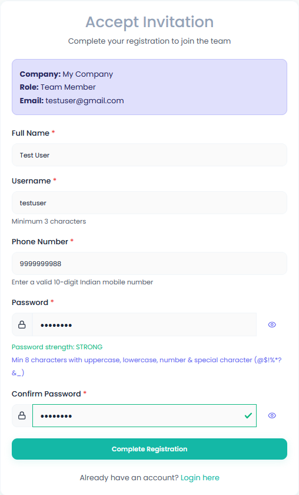
Registration form with all details filled in — click Register to proceed.
| Field | What to enter | Required? |
|---|---|---|
| Full Name | Your first and last name | Required |
| Username | A unique username you will use to log in | Required |
| Email Address | Pre-filled from your invitation — cannot be changed | Required |
| Phone Number | Your 10-digit mobile number (used for WhatsApp notifications) | Required |
| Password | Create a strong password for your account | Required |
| Confirm Password | Re-enter your password to confirm it | Required |
- Open the invitation email sent to you by your Company Admin.
- Click the Accept Invitation link in the email.
- On the registration page, fill in your Full Name, Username, Phone Number, Password, and Confirm Password.
- Click the Register button to create your account.
Step 3 — Account Created
Once you click Register, your account is set up and you are ready to log in. You do not need to verify your email separately — your invitation already confirmed it.
Logging In
Once your account is set up, you can log in to Leadbox at any time using your username and password.
- Go to the Leadbox website and click Login.
- Enter your Username and Password.
- Optionally tick Remember me so you stay logged in on this device.
- Click the Login button to access your account.
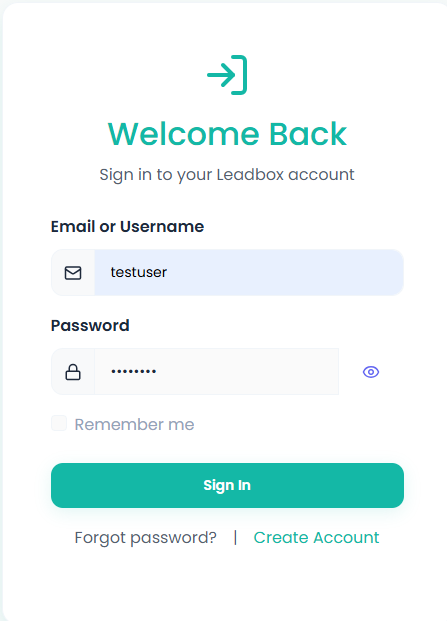
The Leadbox login page — enter your username and password to access your account.
Your Dashboard
After logging in, you will land on your Dashboard. This is your home screen — it gives you a quick overview of your own leads and activity at a glance.
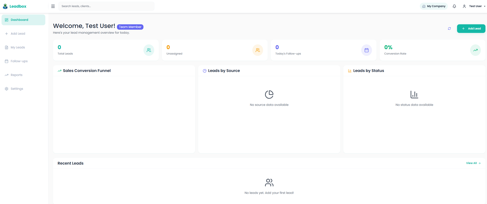
Your Dashboard — shows your lead summary, pipeline funnel, and charts.
Here is what you will see on your Dashboard:
- Total Leads card — shows the total number of leads assigned to you.
- Today's Follow-ups card — shows how many follow-ups are due today so you never miss a callback.
- Pipeline funnel chart — a visual breakdown of your leads by stage (New Lead → Contacted → Meeting Scheduled → Converted, etc.).
- Leads by Source chart — shows where your leads are coming from (e.g. Referral, LinkedIn, Cold Call).
- Recent Leads table — lists the latest leads you have added or updated.
- Use the sidebar on the left to navigate to any section of Leadbox.
Leads
Leads are the prospects or clients you are working with. You can add new leads, view and update your existing leads, and track their progress through the sales pipeline.
4.1 Adding a Lead
When you get a new prospect, add them as a lead in Leadbox straight away so nothing is missed.
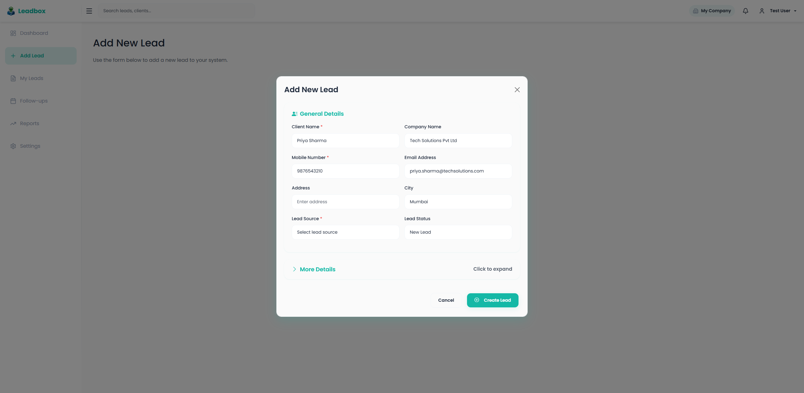
The Add New Lead form — fill in the details and click Create Lead to save.
- Click Add Lead in the left sidebar.
- Fill in the lead's details — name, phone number, company, and how they found you.
- Set the Lead Status (e.g. New Lead or Contacted) and the Interested In field to describe what they are looking for.
- Click Create Lead to save.
4.2 Viewing Your Leads
The My Leads page shows all the leads that belong to you. You can search, filter, and update the status of each lead from here.
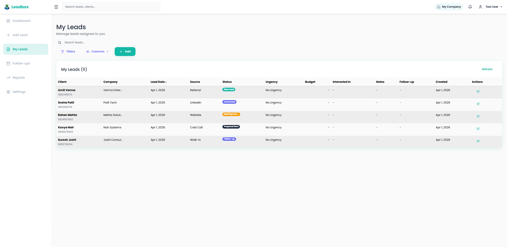
My Leads page — view, search, and manage all your leads from here.
- Click My Leads in the left sidebar.
- Use the Search bar to find a lead by name, company, or phone number.
- Use Filters to narrow down leads by status, source, or date.
- Click on any lead row to view the full lead details and update its status or add notes.
Follow-ups
The Follow-ups page shows all the leads that are due for a follow-up. Use this page to make sure you never miss a scheduled callback or check-in.
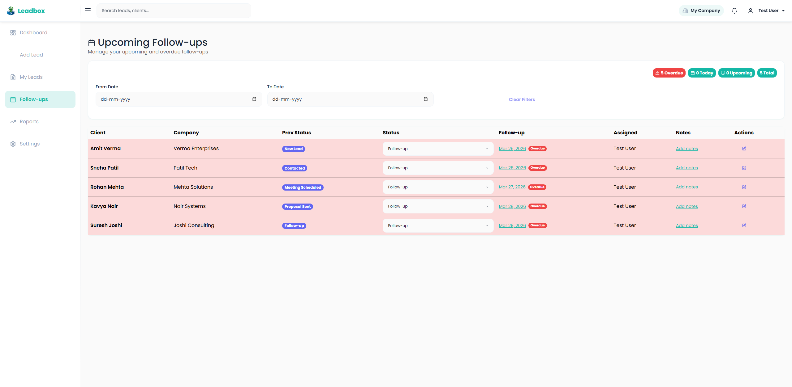
The Follow-ups page — shows overdue, today's, and upcoming follow-ups at a glance.
- Click Follow-ups in the left sidebar.
- The summary at the top shows counts for Overdue, Today, Upcoming, and Total follow-ups.
- Use the From Date and To Date filters to view follow-ups within a specific date range.
- Contact the lead and then update their status or follow-up date in the lead details.
Reports
The Reports section lets you view analytics about your leads and performance. Use this to track how many leads you have converted, where your leads are coming from, and how your pipeline is progressing.
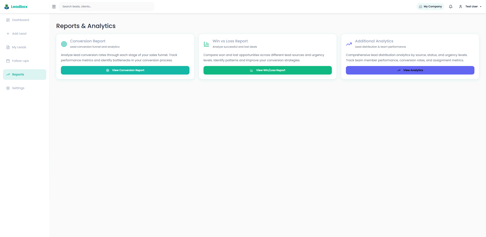
The Reports hub — choose a report type to view detailed analytics.
- Click Reports in the left sidebar.
- Choose one of the three report types described below.
- Use the filters at the top of each report to narrow results by date range or lead source.
6.1 Conversion Report
The Conversion Report shows how well your leads are progressing through the sales pipeline. It shows your overall conversion rate, average days to convert, and a breakdown of performance by lead source.
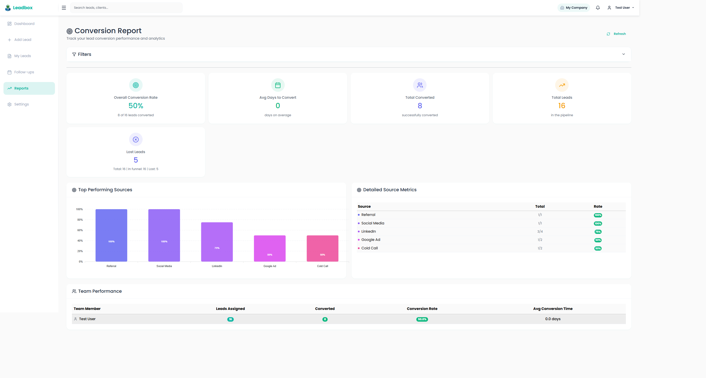
The Conversion Report — shows your conversion rate, top performing sources, and team performance.
- Click View Conversion Report on the Reports hub page.
- The summary cards at the top show your Overall Conversion Rate, Avg Days to Convert, Total Converted, and Lost Leads.
- The Top Performing Sources chart shows which lead sources have the highest conversion rates.
- The Team Performance table shows your personal conversion stats.
6.2 Win vs Loss Report
The Win vs Loss Report compares how many leads you have won (Converted) against those that were lost. Use this to identify which lead sources and urgency levels give the best outcomes.
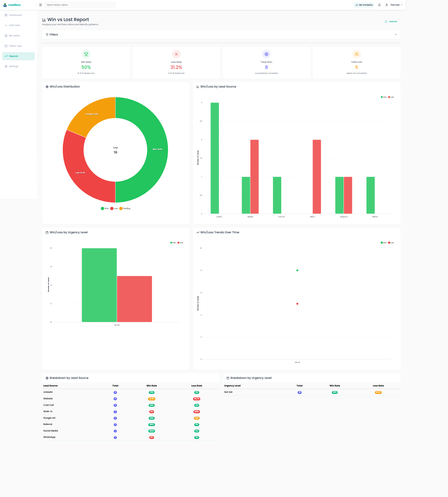
The Win vs Loss Report — shows win/loss ratios by source, urgency, and over time.
- Click View Win/Loss Report on the Reports hub page.
- The summary cards show your Win Rate, Loss Rate, Total Won, and Total Lost.
- The Win/Loss Distribution donut chart gives a quick visual of your won vs lost ratio.
- The Win/Loss by Lead Source chart shows which sources produce the most wins.
- The Trends Over Time chart shows how wins and losses have changed over the period.
6.3 Additional Analytics
The Additional Analytics page lets you search and filter through all your leads with detailed criteria and export the results for further analysis.
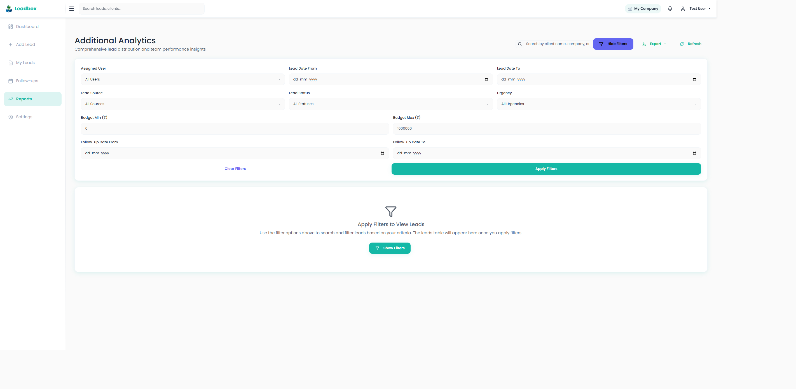
The Additional Analytics page — use filters to search leads and view detailed distribution data.
- Click View Analytics on the Reports hub page.
- Click Show Filters to expand the filter options.
- Filter leads by date range, status, source, or search by name, company, or phone number.
- The filtered leads table will appear below — use the Export button to download the results.
Settings
The Settings page lets you update your personal profile information such as your name and phone number.
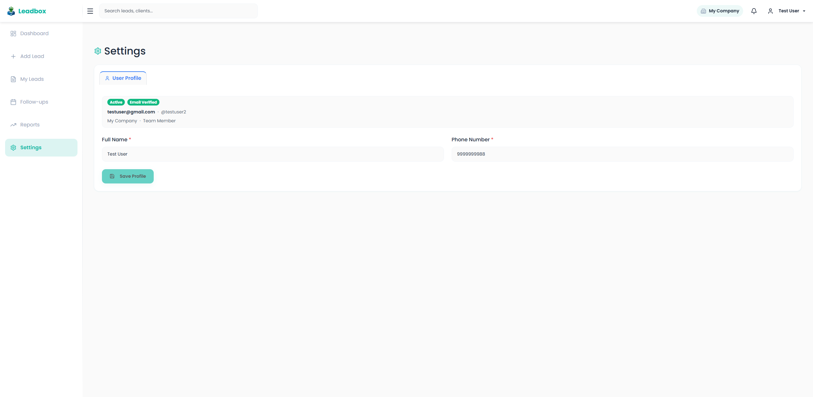
The Settings page — update your name and phone number here.
- Click Settings in the left sidebar.
- Update your Full Name or Phone Number as needed.
- Click Save Profile to apply your changes.